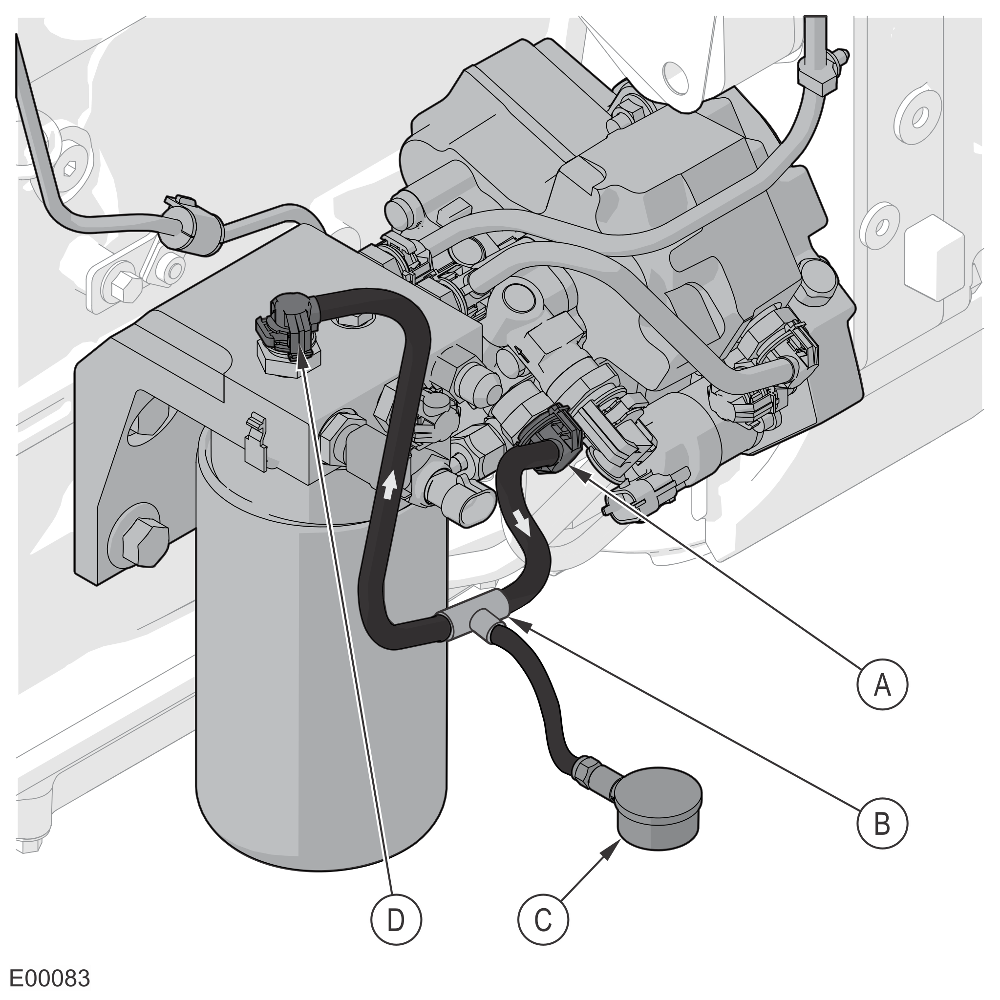
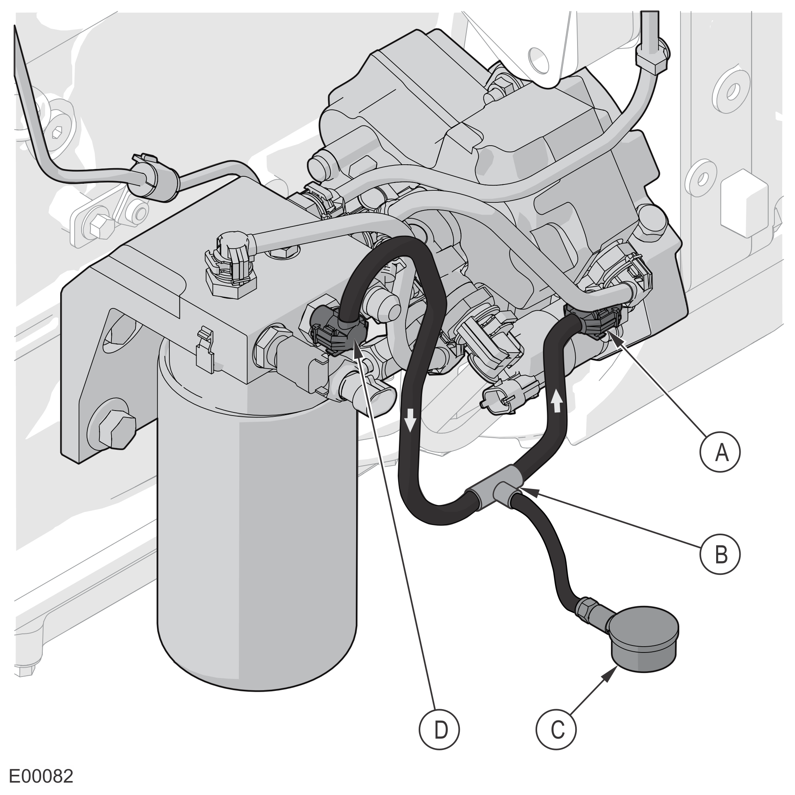

Fuel Pressure Check

A | High Pressure |
B | Low Pressure |
C | Return |
1 | Fuel Tank |
2 | Pre-filter with Mechanical Priming Pump |
3 | Electronic Control Unit (ECU) |
4 | Main Filter |
5 | Low-Pressure Pump |
6 | Bypass Valve (Priming) |
7 | Fuel Metering Valve (MPROP) |
8 | High-Pressure Pump |
9 | Bypass Valve (Over Pressure) |
10 | 5 Bar Relief Valve |
11 | Pump Return Line |
12 | Pressure Limiter Valve (T4i) |
13 | Head and Fuel Rail Return Line |
14 | Pressure Relief Valve (PRV) |
15 | Fuel Rail |
16 | Fuel Rail Pressure Sensor |
17 | Injector |
Fuel Circuit Pressure Check Kit (212542)
Cursor Engine Fuel Leakage Test Kit Add-On (Part Number 73470B)
Visually check all related components for any signs of leakage.
Check the pressure between the gear pump and main filter.

Pressure Gauge Location, Gear Pump to Main Filter
A
Outlet to Main Filter
B
Tee Hose
C
0–16 bar Pressure Gauge
D
Main Filter Inlet From Low-Pressure Pump
Install the 0–16 bar pressure gauge between the low-pressure gear pump and the main filter.
Start the engine and let it run for several minutes.
In case of non-starter: Crank the engine multiple times (maximum 10 seconds each) until the engine has run for a total of 30 seconds.
Notice
To prevent damaging the starter, do not engage the starter motor for more than 10–12 seconds each time. Wait 30 seconds between each attempt to START the engine.
Observe the pressure build up in several engine conditions and note the values. The pressures should match the values in the table below.
Engine Condition
Minimum Pressure (Relative)
Maximum Pressure (Relative)
Low speed (750 rpm)
5 bar (72.5 psi)
8 bar (116 psi)
High Speed (1500 rpm)
5 bar (72.5 psi)
8 bar (116 psi)
If the pressure values are NOT OK (gear pump pressure too low, below minimum values):
Check the tightness of the tubes and connectors. Check that there are no air bubbles in the backflow from the pump. Any small defect in tightness will lead to a reduced suction pressure. Air will be sucked into the system and the diesel flow will be reduced.
Check the tubes and connectors for damage.
Check the pre-filter for damage or blockage.
Check the tank ventilation for dirt or blockage. Open the tank cap and listen to the sucking sound.
Check the high-pressure pump backflow rate to determine if the overflow valve in the high-pressure pump is stuck in the open position.
If no other damage is found, the gear pump may be defective.
Locate and correct the cause, then use the PT-Box tool or LogOn to clear all fault codes and verify that the fault is resolved.
If the pressure values are NOT OK (gear pump pressure too high, above maximum values):
Check the main filter for damage or blockage.
Check the tubes between the gear pump and the high-pressure pump for damage or blockage.
Check the high-pressure pump inlet for blockage.
Check the high-pressure pump backflow pressure to determine if the backflow pipe is blocked or damaged.
Check the high-pressure pump backflow rate to determine if the overflow valve in the high-pressure pump is blocked, dirty, or stuck in the closed position.
Locate and correct the cause, then use the PT-Box tool or LogOn to clear all fault codes and verify that the fault is resolved.
If the pressure values are OK, continue to the next step.
Check the pressure between the main filter and the high-pressure pump.

Pressure Gauge Location, Main Filter to High-Pressure Pump
A
Inlet Supply from Main Filter
B
Tee Hose
C
0–16 bar Pressure Gauge
D
Main Filter Outlet to High-Pressure Pump
Install the 0–16 bar pressure gauge between the main filter and the high-pressure pump.
Start the engine and let it run for several minutes.
In case of non-starter: Crank the engine multiple times (maximum 10 seconds each) until the engine has run for a total of 30 seconds.
Notice
To prevent damaging the starter, do not engage the starter motor for more than 10–12 seconds each time. Wait 30 seconds between each attempt to START the engine.
Observe the pressure build up in several engine conditions and note the values. The pressures should match the values in the table below.
Engine Condition
Minimum Pressure (Relative)
Maximum Pressure (Relative)
Low speed (750 rpm)
5 bar (72.5 psi)
8 bar (116 psi)
High Speed (1500 rpm)
5 bar (72.5 psi)
8 bar (116 psi)
If the pressure values are NOT OK (gear pump pressure too low, below minimum values):
Check the tightness of the tubes and connectors. Check that there are no air bubbles in the backflow from the pump. Any small defect in tightness will lead to a reduced suction pressure. Air will be sucked into the system and the diesel flow will be reduced.
Check the main filter for damage or blockage.
Check the tubes and connectors for damage.
Check the pre-filter for damage or blockage.
Check the high-pressure pump backflow rate to determine if the overflow valve in the high-pressure pump is stuck in the open position.
If no other damage is found, the gear pump may be defective.
Locate and correct the cause, then use the PT-Box tool or LogOn to clear all fault codes and verify that the fault is resolved.
If the pressure values are NOT OK (gear pump pressure too high, above maximum values):
Check the tubes between the main filter and the high-pressure pump for damage or blockage.
Check the high-pressure pump inlet for blockage.
Check the high-pressure pump backflow pressure to determine if the backflow pipe is blocked or damaged.
Check the high-pressure pump backflow rate to determine if the overflow valve in the high-pressure pump is blocked, dirty, or stuck in the closed position.
Locate and correct the cause, then use the PT-Box tool or LogOn to clear all fault codes and verify that the fault is resolved.
If the pressure values are OK, continue to the next step.
Calculate the difference between the pressures measured in Step 2.d and Step 3.d.
If the pressure difference is greater than 2.0 bar (29 psi), replace the main filter.
If the pressure difference is OK, continue to the next step.
The system works properly.